항공무선통신사 (2015-03-07 기출문제)
1과목: 전파법규
1. 전파의 전파특성을 이용하여 위치·속도 및 기타 사물의 특징에 관한 정보를 취득하는 것을 무엇이라 하는가?
- 무선탐지
- 무선측위
- 무선항행
- 무선방향탐지
(정답률: 66%)

2. 다음 중 무선방위측정장치의 설치장소로부터 1km 이내의 지역에 미래참조과학부장관의 승인 없이도 건설할 수 있는 것은?
- 송신공중선
- 철도 및 궤도
- 양각 3도 미만의 건물
- 수신공중선
(정답률: 88%)
3. 항공기가 활주로에 착륙하고자 할 때 활주로부터 떨어진 거리정보를 항공기에 제공하는 무선설비는?
- 로칼라이저
- 글라이드패스
- 마아커비콘
- 전방향표지시설(VOR)
(정답률: 71%)
4. 항공기국의 A3E저파 118MHz부터 136.975MHz까지의 주파수대를 사용하는 무선설비의 변조방식은?
- 진폭변조
- 주파수변조
- 위상변조
- 혼합변조
(정답률: 65%)
5. 국제항공고정 무선 릉신 당에 속하는 항공고정 국이 취급하는 통보에서 통신의 우선 순위를 나타내 는 약어로 옳지 않은 것은?
- 제1순위 : “SS"
- 제2순위 : "DD" 또는 "FF"
- 제3순위 : "GG" 또는 “KK"
- 제4순위 : "TT"
(정답률: 80%)
6. 다음 중 우선국의 기기 대치 시 변경허가를 받아야 하는 무선기기는?
- 간이무선숙의 무선설비기기
- 라디오부이
- 주파수 측정장치
- 비상국의 무선설비기기
(정답률: 68%)
7. 시설자의 지위를 승계하기 위해 미래창조과학부장관 또는 방송통신위원회의 인가를 받아야 하는 경우는?
- 시설자가 사업을 양도하면서 그 사업과 관련된 무선국을 양도한 경우의 양수인
- 시설자가 사망한 경우의 상속인
- 무선국이 있는 선박의 소유권 이전에 의하여 선박을 운항하는 자가 변경된 경우에 해당 선박을 운항하는 자
- 무선국이 있는 항공기의 임대차계약에 의하여 항공기를 운항하는 자가 변경된 경우에 해당 항공기를 운항하는 자
(정답률: 72%)
8. 의무항공기국의 무선설비는 그 송신장치의 출력과 변조도, 수신장치의 감도와 선택도에 대하여 무선설비규칙에서 정한 성능의 유지여부를 얼마의 사용기간에 따라 1회 이상 확인하여야 하는가?
- 1천시간
- 2천시간
- 3천시간
- 4천시간
(정답률: 90%)
9. 다음 중 항공기국이 항공국과 무선전화에 의한 시험통신에 행할 때 가장 먼저 송신하는 것은?
- 상대국의 호출부호
- 자국의 호출부호
- 사용하고 있는 주파수
- 명료도
(정답률: 81%)
10. 국가보안법을 위합하여 급고 이상의 형을 선고 받고 그 집행이 끝나거나 집행을 받지 아니하기로 확정된 무선종사자는 몇 년 경과 후 무선국에 배치할 수 있는가?
- 1년
- 2년
- 3년
- 5년
(정답률: 45%)
11. 선박국과 협동 수색 및 구조작업에 종사하고 있는 항공기국 간의 통신에 사용할 수 있는 주파수는?
- 156.3 MHz
- 4.125 kHz
- 2.183 kHz
- 500 kHz
(정답률: 72%)
12. 다음 중 외국인이 개설할 수 있는 무선국이 아닌 것은?
- 실험국
- 공중통신업무를 위한 고정국
- 항공법에 의한 허가를 받아 국내항공에 사용되는 항공기의 무선국
- 국내에서 열리는 국제적 행사를 위하여 필요한 경우 그 기간에만 미래창조과학부장관이 허용하는 무선국
(정답률: 75%)
13. ‘항공이동위성업무’란 무엇인가?
- 선박에 설치된 이동지구국이 행하는 이동위성업무이다.
- 항공기에 설치된 이동지구국이 행하는 무선항해위위성업무이다.
- 차량에 설치된 이동지구국이 행하는 이동위성업무이다.
- 항공기에 설치된 이동지구국이 행하는 이동위성업무이다.
(정답률: 86%)
14. 항공기국이 항행 중 또는 항행 준비 중에 허가증에 기재된 사항의 범위 외에 운용할 수 있는 경우가 아닌 것은?
- 기상의 조회 또는 시각의 조합을 위하여 행하는 항공국과 항공기국 간의 통신
- 항공기국에서 그 시설자의 업무를 위한 전보를 항공국에 보내기 위하여 행하는 통신
- 동일한 시설자에 속하는 항공기국과 이동업무의 무선국 간에 행하는 시급하지 않은 통신
- 비상통신의 통신체제 확보를 위한 훈련목적의 통신
(정답률: 80%)
15. 항공국의 의무청취 및 지정청취 주파수가 아닌 것은?
- 121.5 MHz
- 2.850 kHz부터 17.970 kHz 까지의 당해 무선국에 지정된 주파수
- 117.975 MHz부터 137 MHz 까지의 당해 무선국에 지정된 주파수
- 243 MHz
(정답률: 59%)
16. 다음 중 무선국 정기검사에 관한 설명으로 옳지 않은 것은?
- 5년의 범위 내에서 실시한다.
- 비영리 목적의 방송국은 정기검사의 면제가 가능하다.
- 정기검사는 대조검사와 성능검사로 구분하여 실시한다.
- 미래창조과학부장관이 무선국별로 기간을 정하여 실시한다.
(정답률: 72%)
17. 다음 중 항공기가 책임항공국으로부터 조난통신에 사용하는 전파를 지시받지 못한 경우에 행할 수 있는 조난통신용 주파수로 적절하지 않은 것은?
- 156.8 MHz
- 2.182 kHz
- 500 kHz
- 145 MHz
(정답률: 55%)
18. 국제전파규칙(RR)에 따라 항공기국 검사를 실시한 경우 무선국 검사관은 자신의 검사결과를 누구에게 알려야 하는가?
- 항공기의 기장
- 항공기 소유자
- 항공기 관할 검사기관
- 항공기의 통신사
(정답률: 76%)
19. 다음 중 양벌규정에 해당하지 않는 경우는?
- 허가를 받아야 할 무선국을 허가 없이 개설한 경우
- 운용정지 명령을 받은 무선국을 운용한 경우
- 무선국에 대한 검사, 조사 또는 시험을 거부한 경우
- 조난이 없음에도 무선설비에 의하여 조난통신을 말하는 경우
(정답률: 70%)
20. 다음 중 정당한 사유 없이 계속하여 6개월 이상 무선국의 운용을 휴지한 경우 미래창조과학부장관이 취할 수 있는 조치는?
- 무선종사자 기술자격의 정지
- 무선국의 운용정지
- 무선국의 운용제한
- 무선국 개설허가의 취소
(정답률: 48%)
2과목: 기초전파공학
21. 다음 중 집적회로(IC)의 일반적인 특성으로 맞지 않는 것은?
- 저전압, 소전력으로 동작한다.
- 수명이 반영구적이다.
- 온도에 강하다.
- 소형이다.
(정답률: 50%)
22. 다음 중 파장의 의미로 맞는 것은?
- 전파의 속도를 주파수로 나눈 값으로 1초당 전파가 진동하는 폭
- 주파수를 전파의 속도로 나눈 값으로 1초당 전파가 진동하는 폭
- 전파의 속도를 주파수로 곱한 값으로 10초당 전파가 반복하는 횟수
- 주파수를 전파의 속도로 곱한 값으로 10초당 전파가 반복하는 횟수
(정답률: 55%)
23. 다음 중 ‘전파의 창(Radio window)'에 대한 설명으로 알맞은 것은?
- 안테나의 주위
- 도심에서 건물이 밀집된 부분
- 반사파를 많이 발생시키는 부분
- 대기상에서 특정 주파수대의 감쇠가 적은 부분
(정답률: 48%)
24. 운항 중인 항공기에 접근하는 항공기가 있을 경우 충돌방지시스템(TCAS)에서 접근하는 항공기의 충돌을 방지하기 위한 정보를 제공해주는 장비는?
- SELCAL
- Radar
- VOR/DME
- ATC Transpondor
(정답률: 53%)
25. 전파고도계(Radio Altimeter)로 측정 가능한 고도는?
- 절대고도
- 진고도
- 상대고도
- 기압고도
(정답률: 56%)
26. 다음 중 극초단파(UHF)의 주파수 내역은?
- 3 ∼ 30 MHz
- 30 ∼ 300 MHz
- 300 ∼ 3,000 MHz
- 3 ∼30 GHz
(정답률: 49%)
27. TACAN계기에 나타나는 DME는 어떤 거리인가?
- 수평거리
- 경사거리
- 수직거리
- 곡선거리
(정답률: 49%)
28. 항공기 사고 시 수색 및 구조를 위한 11.5 MHz 의 비상위치지시용 무선표지설비(ELT)에 대한 기술기준에 해당되지 않는 것은?
- 사용하는 전파의 형식은 A2B 일 것
- 공중선의 지향특성이 수평면 단방향성일 것
- 변조도는 85% 이상일 것
- 주파수 허용편차는 0.0⑤% 이내일 것
(정답률: 47%)
29. 다음 중 항공기의 계기착륙장치(ILS)와 관계 없는 것은?
- 로칼라이지
- 글라이드패스
- 마아커바콘
- 레이더
(정답률: 61%)
30. FM 송신기의 발진부에서 30MHz로 동작하고 있는 체배증폭기에서 2체배를 하고 있을 때 출력 주파수는?
- 30 MHz
- 32 MHz
- 60 MHz
- 900 MHz
(정답률: 65%)
31. 다음 중 안테나의 특징을 나타내는 요소로 옳지 않은 것은?
- 임피던스
- 지향성
- 이득
- 파장
(정답률: 39%)
32. 산과 같은 높은 지형을 전파가 통과할 때 여러 신호가 혼합되고 반사되어 ADF 지시침이 흔들리게 되는 현상은?
- Night Effect(야간 효과)
- Terrain Effect(산악 효과)
- Shoreline Effect(해안 효과)
- Thunderstorm Effect(뇌우 효과)
(정답률: 67%)
33. 안테나를 전송선으로 급전할 때 임피던스 Zc=300Ω이고 급전선로의 특성 임피던스 Zo=200Ω이라고 하면 부정합에 의하여 전송선에 정재파가 발생되는데, 이때의 전압 정재파비(VSWR)?
- 0.25
- 0.5
- 1
- 1.5
(정답률: 60%)
34. 항공기가 On Course에서 10° 이상 이탈되었을 때 CDI(Course Deviation Indicator)는?
- 완전히 한쪽으로 비껴나간다.
- 2dot 한쪽으로 비껴나간다.
- 거리에 따라 비껴나가는 정도가 다르다.
- 1dot 한쪽으로 비껴나간다.
(정답률: 52%)
35. 다음 중 광섬유에 의한 전송의 장점이 아닌 것은?
- 외부 충격에 강하다.
- 기상조건에 좌우되지 않는다.
- 전송손실이 적다.
- 안전한 전송이 가능하다
(정답률: 55%)
36. 태양의 폭발에 의한 방출된 자외선이 E층의 전자밀도를 증가시켜 통신을 불가능하게 만드는 현상은?
- 룩셈부르크 효과(Luxemburg Effect)
- 자기폭풍(Magnetic Storm)
- 델린저 현상(Eellinger Phenomena)
- 도플러 효과(Doppler Effect)
(정답률: 60%)
37. 전자파 전력을 분할하기 위하여 사용하는 장치를 무엇이라 하는가?
- 공동공진기
- 도파관 리액턴스
- 분배기
- 저항감쇠기
(정답률: 64%)
38. 전파방향에 대하여 전기장 성분이 존재하고 자기장 성분은 직각으로 되어 나타나지 않는 파를 무엇이라 하는가?
- 자기적 횡파
- 전류적 횡파
- 전기적 횡파
- 지향적 횡파
(정답률: 48%)
39. 다음 그림에서 두 저항의 합성저항이 300Ω이 되려면 저항 X의 값은 얼마이어야 하는가?
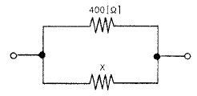
- 100 Ω
- 1.2 kΩ
- 1.5 kΩ
- 2.0 kΩ
(정답률: 53%)
40. 다음 중 방향과 크기가 시간적으로 바뀌지 않는 전류는?
- 교류
- 직류
- 삼상전류
- 백동전류
(정답률: 61%)
3과목: 통신보안
41. 다음 중 통신보안이 필요한 사유로 가장 적절한 것은?
- 통신장비가 디지털화 되고 있으므로
- 대부분의 통신이 평문으로 소통되므로
- 무선통신 이용증가로 풍부한 정보의 원천이 되므로
- 수신장치의 제조기술이 고도화되므로
(정답률: 59%)
42. 다음 중 통신보안 우선순위가 상대적으로 가장 높은 것은?
- 일반 보통우편
- 일반 유선전화
- 인가된 유선통신
- 시호통신
(정답률: 44%)
43. 다음 중 단파통신의 보안 취약점으로 옳은 것은?
- 통신 상대방을 기만하기 쉽다.
- 전자기술의 고도화로 수신기 제작이 용이하다.
- 주파수 범위가 협소하여 혼신이 많다.
- 원거리에서도 도청할 수 있다.
(정답률: 48%)
44. 다음 중 전령(인편)통신의 취약성에 관한 설명으로 옳지 않은 것은?
- 통신의 신속성이 결여된다.
- 비경제적이다.
- 피습을 당할 우려가 있다.
- 원거리 통신이 불가능하다.
(정답률: 56%)
45. 다음 중 비밀의 수발 방법으로 가장 바람직하지 못한 것은?
- 임호화하여 전신으로 수발한다.
- 무선통신망으로 수발한다.
- 각급기관의 문서수발계통에 의하여 수발한다.
- 등기우편에 의하여 수발한다.
(정답률: 56%)
46. 다음 중 보호구역의 설정대상으로 보기 어려운 것은?
- 종합비밀보관소
- 정보공작실
- 탄약고지대
- 군부대 민원실
(정답률: 65%)
47. 방해통신에 대한 효과적인 대책으로 가장 적절한 것은?
- 송신출력을 낮춘다.
- 확인법을 사용한다.
- 주파수를 변경한다.
- 암호를 사용한다.
(정답률: 44%)
48. 약호자재 관리부의 보존기관으로 틀린 것은?
- 약호자재기록부 : 5년
- 약호자재 발간승인서 : 3년
- 약호자재 점검기록부 : 5녀
- 약호자재 사용기록부 : 3년
(정답률: 53%)
49. 다음 중 통신도청에 대한 방지책으로 적절치 않은 것은?
- 통신보안장치를 설치한다.
- 상대방을 확인한다.
- 불필요한 전파발사를 억제한다.
- 통신운용 절차 및 규율을 엄수한다.
(정답률: 48%)
50. 다음 중 통신보안시설과 관련 있는 통신보안 대책은?
- 가체 통신망의 통화내용 감독
- 통신문의 사전 보안성 검토
- 통제구역 또는 제한구역 표지 부착
- 자체 통신망에서 위규발생 시 그 통신의 중단 및 기타 필요조치
(정답률: 55%)
4과목: 영어
51. 다음 괄호 안에 알맞은 것은?
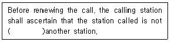
- in communication to
- in communication of
- in communication with
- in communication for
(정답률: 72%)
52. 다음 묻장어I서 나타내는 전파의 특성을 가장 적절히 설명한 것은?
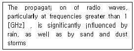
- 강우 뿐 아니라 모래와 먼지폭풍에 의하여 조금 영향을 받는다.
- 강우 뿐 아니라 모래와 먼지폭풍에 의하여 중대한 영향을 받는다.
- 강우 뿐 아니라 모래와 먼지폭풍에 의하여 어떤 영향도 받지 않는다.
- 강우 뿐 아니라 모래와 먼지폭풍에 의하여 때때로 영향을 받는다.
(정답률: 81%)
53. ICAO 규정에서 정의한 다음의 용어는 무엇을 나타내는가?
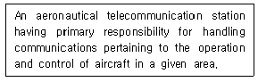
- Air control radio station
- Ground control radio station
- Land station
- Air-ground control radio station
(정답률: 59%)
54. 다음 문장의 괄호 안의 수준에 해당하는 것은?
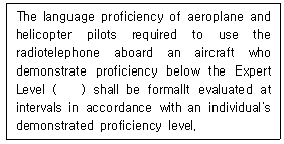
- 3
- 4
- 5
- 6
(정답률: 75%)
55. 다음의 괄호 안에 적합한 것은?
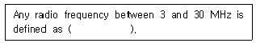
- High Prequency
- Very High Prequency
- Ultra High Prequency
- Super High Prequency
(정답률: 65%)
56. 관제사가 항공교통 관제상 위험한 상황을 피하기 위해 조종사에게 급한 항공기 기동을 요구할 때 주로 쓰이는 말은?
- At once
- Very soon
- Right now
- Immediately
(정답률: 81%)
57. 다음 설명은 어떤 용어에 대한 의미인가?
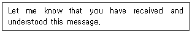
- Confirm
- Ackmowledge
- Understand
- Check
(정답률: 70%)
58. 다음 문장의 밑줄 친 부분에 알맞은 말은?
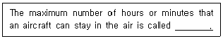
- Endurance
- Maximum duration
- Longest flight duration
- Maximum flight period
(정답률: 68%)
59. 송신 중에 쓰이는 말로 “The message will be repeated."와 같은 내용의 용어로 무엇인가?
- Speak again
- I say again
- Repeat last transmission
- Request last transmission again
(정답률: 73%)
60. 다음 문장의 밑줄 친 부분에 알맞은 것은?
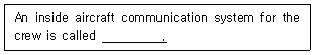
- Interphone system
- Transmitter system
- Receiver system
- Transponder system
(정답률: 73%)
61. 다음 문장의 밑줄 친 부분에 들어갈 알맞은 것은?
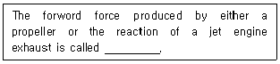
- Power
- Length
- Weight
- Thrust
(정답률: 76%)
62. 다음 괄호 안에 알맞은 것은?
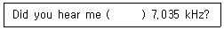
- in
- as
- on
- by
(정답률: 68%)
63. 항공통신 교신 중에 조종사 또는 관제사가 수조 동안 기다릴 것을 요구할 때 또는 “ATC clearance"가 곧 나간다는 것을 알릴 때 사용되는 용어는?
- Wait seconnds
- Stand by
- Wait
- Wait a moment
(정답률: 77%)
64. Choose the wrong ICAD phonetic alphabet.
- K : Kilo
- H : Hotel
- C : Charlie
- B : Brave
(정답률: 79%)
65. 다음 중 뜻이 다른 문장은 어느 것인가?
- Have you booked a seat on a plane?
- Have you reserved a seat on a plane?
- Did you make a reservation on a plane?
- Do you have a bookkeeping on a plane?
(정답률: 78%)
66. 다음 괄호 안에 가장 적합한 것은?
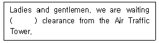
- for
- to
- from
- in
(정답률: 80%)
67. 다음 대화 중 밑줄 친 부분의 뜻은?
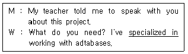
- 전문으로 하는
- 모으고 있는
- 추진 중인
- 특별한
(정답률: 76%)
68. 다음 문장의 밑줄 친 부분에 들어갈 가장 적합한 단어는?
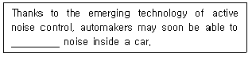
- dampen
- energize
- undertake
- augment
(정답률: 63%)
69. 다음 문장에서 밑줄 친 부분의 표현이 잘못된 것은?
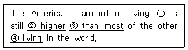
- is
- higher
- than most
- living
(정답률: 68%)
70. 다음 중 동사의 변형을 나타낸 것으로 잘못된 것은?
- overspread - overspread - overspread
- transmit - transmited - transmited
- modulate - modulated - modulated
- broadcast - broadcast - broadcast
(정답률: 70%)